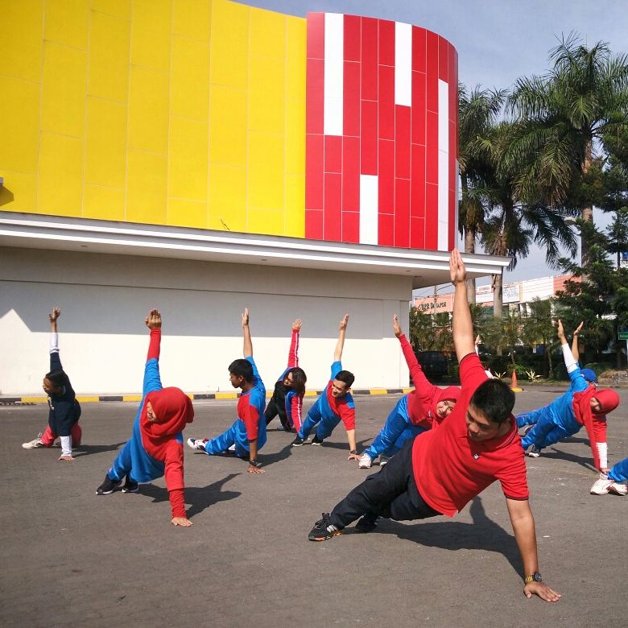
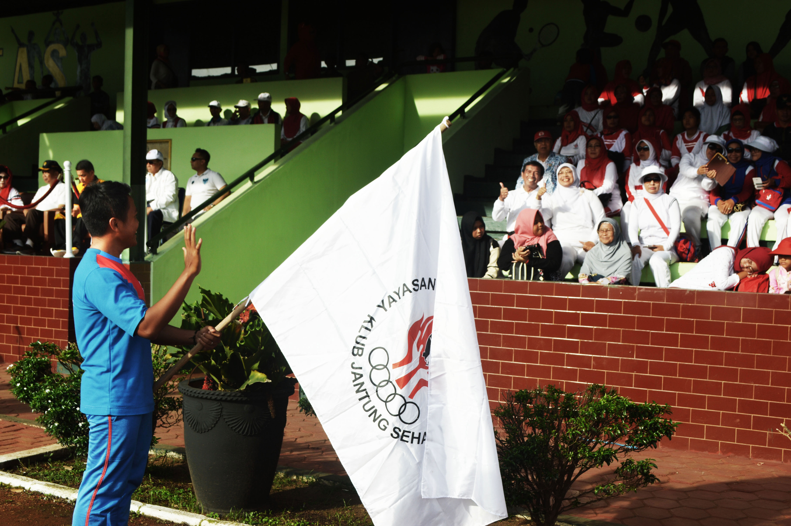
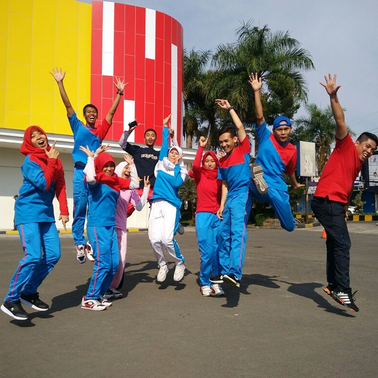
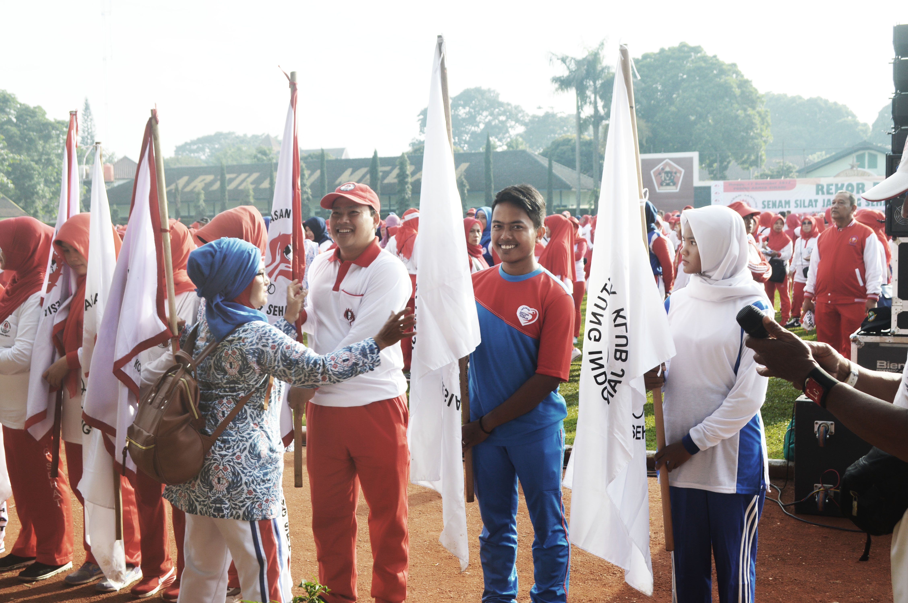
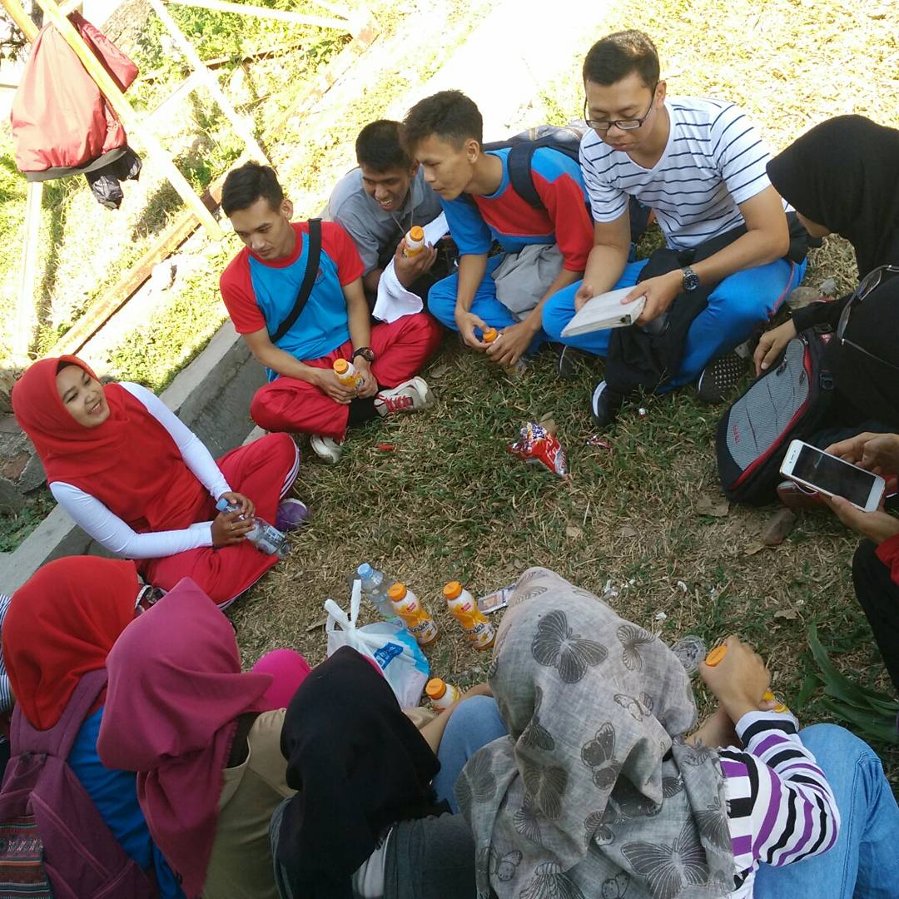

Daftar Artikel
Artikel luar biasa yang sudah saya tulis.
Artikel sudah disetujui oleh admin dan sudah publish di web

Manfaat Olahraga bagi Jantung
Terakhir diupdate: 02 Juli 2021
Status: Public

Acara pelantikan KJR dan KJS di Bandung
Terakhir diupdate: 02 Juli 2021
Status: Public

KJR Cianjur in Action
Terakhir diupdate: 02 Juli 2021
Status: Public
Artikel sedang di-review oleh admin

Acara pelantikan kjs dan kjr di bandung part 2
Terakhir diupdate: 02 Juli 2021
Status: Artikel sedang di review
Artikel ditolak oleh admin

perkenalan anggota baru kjr
Terakhir diupdate: 02 Juli 2021
Status: Artikel ditolak